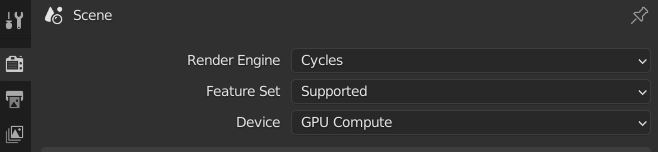
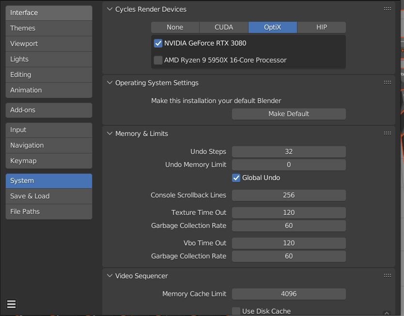
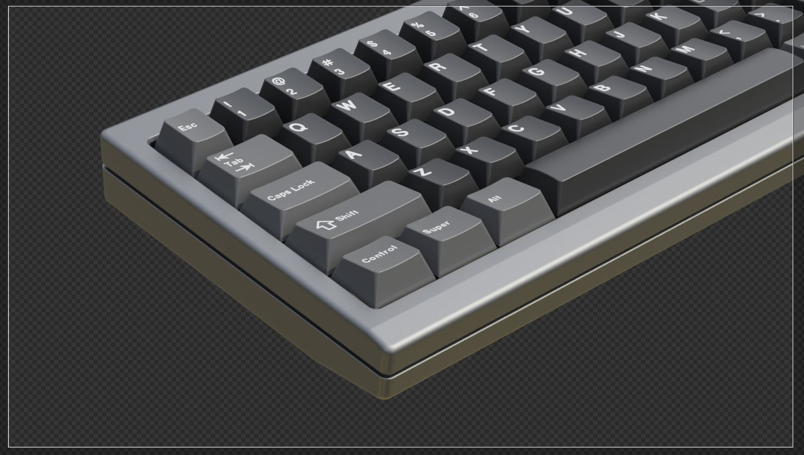
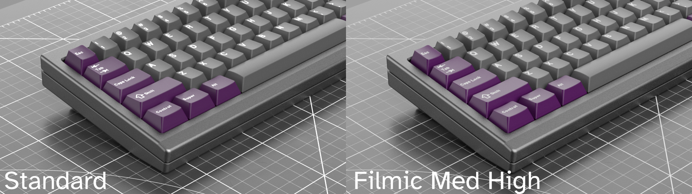
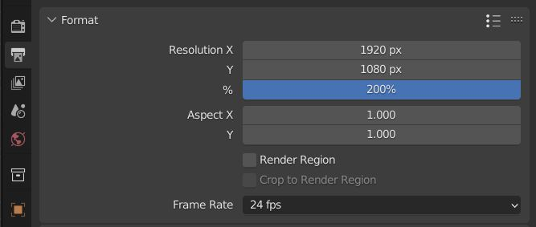
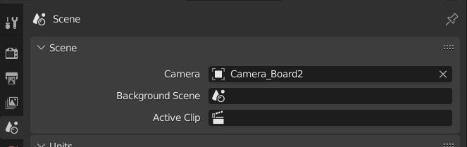
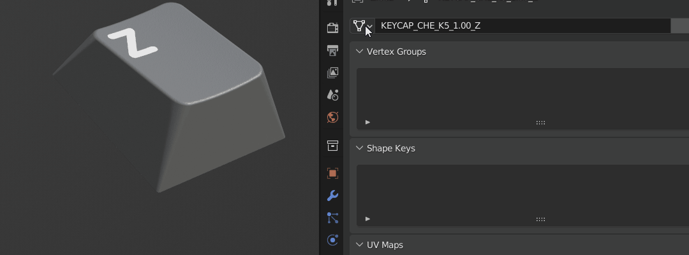
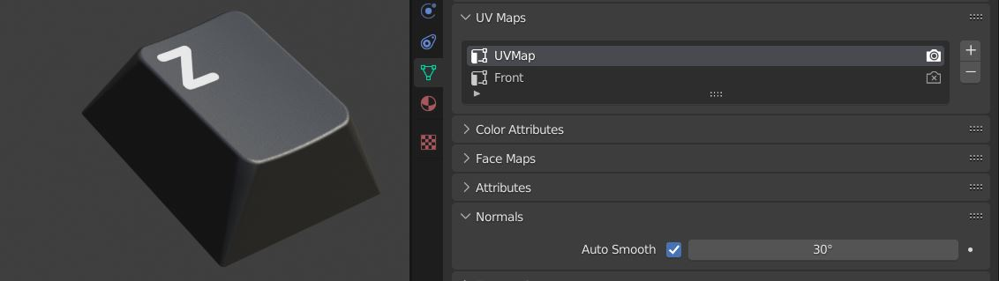
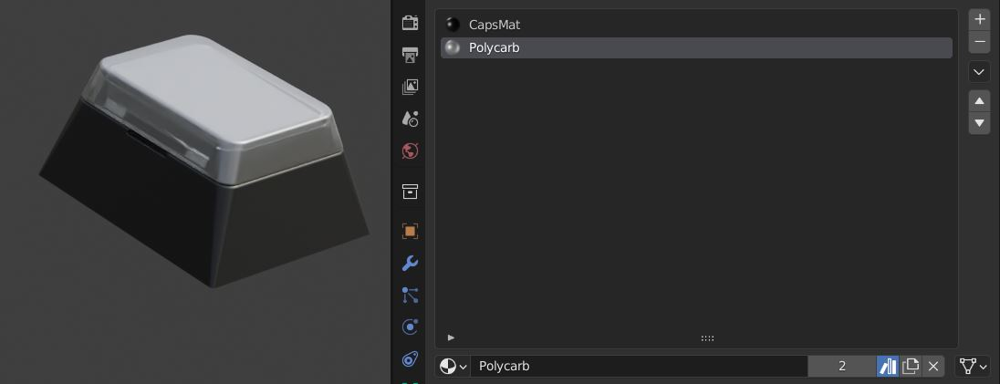
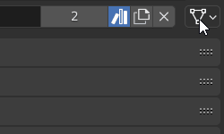

Éditeur de propriétés
La section des propriétés de l’interface de Blender est immense, je ne vais donc mentionner que quelques-unes des zones les plus pertinentes.
Propriétés de rendu
Périphérique de rendu

Vous pouvez accélérer votre rendu en utilisant le GPU (carte graphique). Gardez à l’esprit que vous devez également configurer le périphérique de calcul dans les préférences pour que cela fonctionne.

Échantillonnage
L’échantillonnage par défaut est réglé sur 32 dans la vue 3D et sur 256 au moment du rendu. Si vous effectuez un rendu de polycarbonate, je vous recommande vivement de choisir au moins 512 échantillons.
Débruitage
Le débruitage peut être configuré ici. Je coche généralement le débruitage pour la vue 3D et le règle sur automatique. Réglez l’échantillon de départ sur 2 ou plus pour garder votre vue 3D réactive. Le débruitage pour le rendu final est également disponible dans le compositeur.
Film transparent

Si vous effectuez le rendu d’images à fond transparent, vous devez activer Film>Transparent.
Gestion des couleurs

Il s’agit d’une section importante. Depuis Blender 4.0, AgX remplace Filmic comme transformation de vue par défaut pour les nouveaux fichiers. La configuration présentée ici utilise Filmic sans look appliqué. Certains utilisateurs préfèrent le régler sur Standard car ils ont l’impression qu’il est plus facile d’obtenir une correspondance de couleurs. Je préfère généralement Filmic en raison de la transition progressive des hautes lumières et je le règle sur Medium High Contrast pour obtenir une sensation très similaire à Standard mais avec un meilleur ombrage. Si vous prévoyez d’exporter en EXR, le choix que vous faites n’a pas d’importance. Le tampon complet sera simplement exporté.
Propriétés de sortie
Résolution
C’est ici que vous définissez la résolution de l’image de sortie. Cette résolution compte également lorsque vous effectuez des opérations liées aux UV, telles que les projections.
Astuce : si vous souhaitez passer en 4k alors que la résolution actuelle est de 2k, vous pouvez saisir 200% dans le champ au lieu de 100%.

Propriétés de la scène
Caméra active

C’est ici que vous définissez la caméra active que Blender utilisera lorsque vous lancerez le rendu.
Propriétés des données d’objet
Données d’objet

Ne négligez pas le menu déroulant Données d’objet, car il vous permet de transformer n’importe quel objet en n’importe quel autre objet en le sélectionnant dans le menu déroulant.
UV maps

Si vous avez besoin d’accéder à l’UV map d’un objet, c’est ici que vous la trouverez.
Propriétés du matériau
Index de matériau

Les objets peuvent avoir plus d’un matériau attaché. Par exemple, les touches à fenêtre et les touches à légende interchangeable ont 2 emplacements de matériau pour le matériau de la touche et le polycarbonate.
Lien de matériau

Vous pouvez indiquer à Blender d’utiliser le matériau attaché aux données d’objet ou à l’objet, individuellement pour chaque objet.